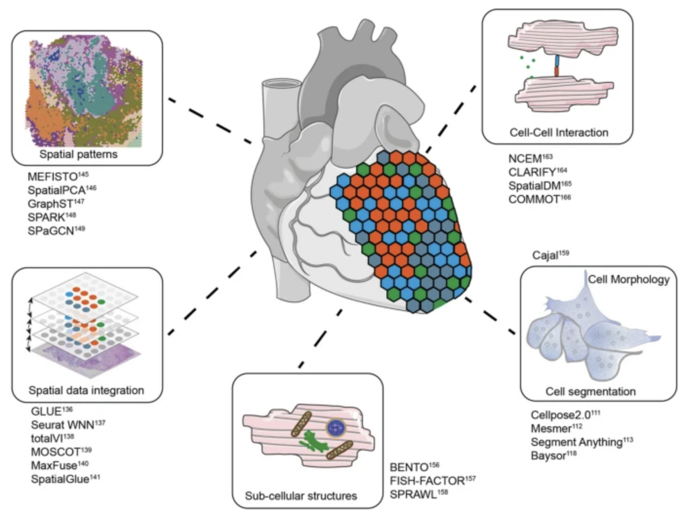

10 ‘Single-cell’ spatial transcriptomics
Single-cell spatial transcriptomics is an emerging technology that enables the measurement of gene expression while preserving the spatial organization of cells within a tissue. See Figure 10.1 for a useful schematic I like. Unlike traditional single-cell RNA sequencing, which dissociates cells and loses spatial context, spatial transcriptomics allows researchers to analyze gene expression in relation to cellular neighborhoods, tissue architecture, and microenvironments, see Figure 10.2.
The spatial arrangement of cells is fundamental to understanding cell biology, as cellular functions are often influenced by their local microenvironment:
Cancer: The tumor microenvironment plays a crucial role in disease progression, immune evasion, and therapeutic response. Understanding where specific cell populations reside within a tumor and how they interact with stromal and immune cells can reveal mechanisms of resistance and potential therapeutic targets.
Developmental biology: Spatial positioning dictates lineage specification and organ formation, where disruptions in cell placement can lead to congenital defects. We can also overlay the gene expression at each spatial location with other imaging technologies or our current understanding of the structure of an organ, see Figure 10.3. This can help us learn how the cells in different regions of an organ have different functions, even if they are all the “same cell type.”
- Disease: In neurodegenerative diseases such as Alzheimer’s, the spatial distribution of microglia and astrocytes based on their (spatial) proximity to pathological hallmarks like amyloid plaques and tau tangles provides critical insights into disease mechanisms.
As one concrete example of how spatial transcriptomics advances cell biology beyond what other sequencing technologies offers: spatial transcriptomics is particularly valuable for studying cell-cell communication, as it enables the identification of ligand-receptor interactions that mediate signaling between neighboring cells. By integrating spatial data with single-cell transcriptomics, researchers can infer functional relationships between different cell types, uncovering regulatory networks that drive biological processes.
Note: Spatial information in cell biology has been studied for decades, long before single-cell sequencing became commercially feasible. Techniques like fluorescence in situ hybridization (FISH) have been used to visualize the spatial localization of specific RNA molecules within cells, providing crucial insights into gene expression patterns. Microscopy-based methods, including confocal and super-resolution imaging, have also been instrumental in understanding cellular structures and interactions. The key novelty of modern spatial transcriptomics is its ability to scale these analyses – rather than measuring just a few genes at a time, we can now capture the spatial expression patterns of hundreds to thousands of genes simultaneously, enabling a much more comprehensive view of cellular organization and function.
10.1 The broad categorization of spatial transcriptomic technologies
Spatial transcriptomic technologies can be broadly categorized into two main approaches: spot-based methods and imaging-based methods, see Figure 10.4 and Figure 10.5.
Spot-based technologies utilize sequencing-based approaches to capture gene expression across a tissue section. These methods typically involve placing spatially barcoded capture spots on a slide, allowing RNA molecules from the tissue to be sequenced while retaining their spatial information. Spot-based techniques offer broad coverage across the entire transcriptome, making them well-suited for large tissue sections and unbiased gene discovery. However, they have relatively low spatial resolution due to the size of the capture spots and may lack sufficient depth for detecting lowly expressed but biologically significant genes.
Imaging-based technologies rely on multiplexed imaging methods to visualize gene expression directly within tissues. These approaches build upon fluorescence in situ hybridization (FISH) and other imaging techniques, enabling subcellular resolution of RNA molecules. By using sequential hybridization cycles with fluorescent probes, imaging-based methods can measure the expression of dozens to hundreds of preselected genes. While this high-resolution approach provides detailed spatial maps at the single-molecule level, it requires prior selection of target genes and computationally intensive methods to delineate cell boundaries from dense tissue images.
See Figure 10.6, Figure 10.7, and Figure 10.9 for examples of what these datasets look like, and how spot- and imaging-based spatial transcriptomics could yield quite dramatically different datasets.

See Figure 10.10 for a table of many possible technologies to perform spatial transcriptomics.
Remark 10.1. These are all 2D tissue slices! Our body is three-dimensional (unsurprisingly). However, all the spatial information we are collecting is typically 2D. (Some really rich consortiums have sequenced many cross-sectional 2D slices to reconstruct the 3D organ, for example M. Zhang et al. (2023). However, most single-PI labs do not have the budget to do this. Therefore, it’s important you ask yourself: “Is it possible I am misleading myself by analyzing a 2D tissue slice when my question is about the 3D organ?”
It’s entirely possible that the cellular organization/dynamics on a 2D tissue slice is representative of the overall tissue. It’s also entirely possible that it’s not. Knowing how the 2D tissue was selected (i.e., how did someone even choose this specific cross-section in the first place?) is an important question to answer before you can even start thinking mathematically on how your 2D findings relate back to the 3D shape.
10.1.1 Sequencing-based: Visium (10x)
Visium by 10x Genomics is a widely used spot-based spatial transcriptomics technology. See Figure 10.11 for a cartoon on how it works. Visium captures transcriptomic information within predefined spatial spots on a tissue section, allowing for spatially resolved gene expression profiling. However, each spot is relatively large (usually around 55 µm in diameter), often encompassing multiple cells. To infer cellular composition within each spot, computational deconvolution methods are typically applied. In addition to transcriptomic data, Visium also provides an H&E (hematoxylin and eosin) stained image of the tissue, which is valuable for histological context, aiding in the interpretation of spatial gene expression patterns and tissue architecture. ?fig-spatial-analyses provides examples of this spot-based spatial transcriptomics.
10.1.2 Sequencing-based: Visium HD (10x)
Visium HD is an advanced version of Visium that significantly improves spatial resolution, see Figure 10.14 and Figure 10.15. Unlike standard Visium, which has relatively large spots, Visium HD features smaller spots, allowing for higher spatial resolution and better separation of individual cells. This enhancement enables more precise mapping of transcriptomic data to tissue morphology. However, the increased resolution comes at a higher cost, as sequencing expenses rise due to the need for greater sequencing depth to capture the finer spatial granularity.
10.1.3 Imaging-based: MERFISH/MERSCOPE (Vizgen)
Multiplexed Error-Robust Fluorescence In Situ Hybridization (MERFISH) is an imaging-based spatial transcriptomics method that enables the detection of hundreds to thousands of preselected RNA transcripts in a tissue section. It operates by hybridizing barcoded probes to RNA molecules, followed by multiple rounds of imaging to decode the transcript identities, see Figure 10.16. Since MERFISH provides subcellular resolution, it allows precise localization of transcripts within individual cells, but it requires computational cell segmentation to assign transcripts to specific cells. MERSCOPE is a commercial platform for MERFISH, providing an integrated solution for sample preparation, imaging, and data analysis. See Figure 10.17 and Figure 10.18 for examples of the data.
10.1.4 Imaging-based: Xenium (10x)
Xenium by 10x Genomics is another imaging-based spatial transcriptomics platform, designed to profile a targeted set of transcripts with subcellular resolution. Unlike sequencing-based approaches, Xenium relies on fluorescence imaging to detect preselected RNA targets within tissue sections. See Figure 10.19 for a comparison. It enables high-throughput spatial mapping of gene expression while preserving tissue morphology. As with other imaging-based methods, accurate cell segmentation is essential to delineate individual cells and associate detected transcripts with them. (There are many papers that try comparing Xenium and MERSCOPE. See Figure 10.20 for one paper.)
See more at https://www.10xgenomics.com/blog/optimizing-your-spatial-transcriptomics-research-with-visium-hd-and-xenium-in-situ.
10.1.5 So, what should I use?
If you are about to collect spatial transcriptomics data yourself, it’s important to first consider what you’re trying to biologically investigate (since this data will be quite expensive to collect). Are you trying to explore the complexity of a tissue, or are you trying to definitively prove the existence (or lack thereof) of something? The nature of your biological question might make it apparent which technology best suits your needs. See Figure 10.21.
See a massive review of the benefits and drawbacks of different spatial transcriptomics technologies in Lee et al. (2024), Liao et al. (2021), Duan, Cheng, and Cheng (2023).
10.2 A whirlwind of other tasks
Beyond generating spatial transcriptomic data, a variety of computational tasks are necessary to ensure accurate interpretation and integration with other biological information. These tasks broadly fall into two categories: preprocessing and statistical analysis.
10.2.1 Preprocessing
Raw spatial transcriptomic data often require substantial preprocessing to correct for technical artifacts and enhance interpretability. One key step is integration, where spatial data are aligned with other tissue slides or combined with histological information, such as the H&E stain, to provide morphological context. Contamination removal is another crucial step, as transcripts may originate from neighboring cells or ambient RNA, especially in spot-based approaches. Additionally, imputation techniques can be applied to recover missing gene expression values, particularly in spot-based methods where some spots may have low or undetectable expression due to sequencing depth limitations.
10.2.2 Statistical analyses
Once preprocessed, spatial transcriptomic data can be analyzed using various statistical approaches to uncover biological insights. Identifying spatially variable genes helps determine which genes exhibit spatially structured expression patterns, highlighting key regulators of tissue organization. Another common analysis involves defining spatial domains, where clustering techniques identify tissue regions with distinct gene expression profiles while accounting for spatial proximity. For spot-based methods, cell-type deconvolution is used to estimate the composition of different cell types within each spot, given that multiple cells may contribute to a single measurement. In imaging-based methods, cell segmentation is a critical computational step, where individual cells are delineated based on transcript localization and morphological features to achieve single-cell resolution.
See Figure 10.12, Figure 10.13, Figure 10.22, and Figure 10.23 (and the papers these figures come from) for a broad overview of all the different types of analyses you can do with spatial transcriptomics.

Remark 10.2. Remember, after we collect the tissue from a donor, we don’t really care about the donor anymore. We care about the biology One of the trickiest (statistical) philosophical roadblocks you’ll encounter when you work on spatial transcriptomics is: “What on earth is the ‘population’ I’m studying?” You’ll need to think really hard about variation that might occur within an individual or between different individuals. (Spatial transcriptomics by itself is currently financially unrealistic to be a reliable tool for biomarker detection, unlike other biomedical technologies such as MRI, PET scans, CT scans, staining of tissue slices, etc.)
It’s not uncommon to only have one or two spatial transcriptomic tissue slices for an entire study. (This is really a reflection about how expensive and laborious getting this data is.) In that case, are you really just learning biology about this one specific person? How do you know that the donor’s biology is representative of overall human biology?
Broadly speaking, there are two philosophical approaches to handle this:
You don’t: Some papers simply show “existence.” That is, they have a statement that is of the flavor, “Our paper demonstrates that this phenomenon can occur in tissue, because we have found evidence of it existing in our tissue.” The benefit of this strategy is that you can always claim this, and there is still room for scientific novelty. However, you cannot make any statement that generalizes beyond your specific tissue. Hence, it’s really important you pick really “interesting” tissue slices for this approach.
Relate everything back to the omics: It’s difficult to “integrate” tissue slices from two completely different people together. (You can think about how impossibly hard this is, especially if you have familiarity with MRI data. How would you “align” my lung tissue slice with your lung tissue slice? What if my lungs are slightly bigger/smaller in certain regions than yours?) Unlike single-cell data (where we can just combine the cells across many donors), in spatial transcriptomics, you are usually instead relating all your findings on
For examples of what type of analyses you can do with spatial transcriptomics data (beyond what we’ll discuss in these notes), see: https://hutchdatascience.org/Choosing_Genomics_Tools/spatial-transcriptomics-1.html, https://squidpy.readthedocs.io/en/stable/, and https://giottosuite.readthedocs.io/en/master/.
10.3 Cell-cell communication
Cell-cell communication is a fundamental process in biology that enables cells to coordinate their behavior, maintain homeostasis, and respond to environmental stimuli. Through various signaling mechanisms, cells transmit biochemical signals that regulate development, immune responses, tissue repair, and disease progression. The ability to understand and map these communication networks is crucial for uncovering mechanisms underlying diseases such as cancer, neurodegenerative disorders, and immune dysfunctions. With advances in spatial transcriptomics and single-cell technologies, researchers can now investigate cell-cell communication at unprecedented resolution, allowing for insights into how cells interact in complex tissue environments.
10.3.1 How do cells communicate with one another?
Cells communicate using multiple signaling modalities, each suited for different biological contexts:
- Autocrine signaling: A cell releases signaling molecules that bind to its own receptors, allowing it to regulate its own behavior. This is common in immune responses and cancer progression.
- Gap junction signaling: Cells directly exchange ions and small molecules through specialized intercellular channels called gap junctions. This form of communication is rapid and crucial in electrically excitable tissues like the heart and nervous system.
- Paracrine signaling: Cells secrete signaling molecules that diffuse over short distances to affect neighboring cells. This is commonly seen in tissue development and inflammation.
- Endocrine signaling: Hormones are released into the bloodstream and travel long distances to regulate distant target cells. This is a key mechanism in systemic physiological regulation, such as insulin signaling in metabolism.
See these illustrated in Figure 10.24.
What do we do with these results? There are many types of results we could publish. Visually, these are summarized in Figure 10.25.
10.3.2 Brief aside: Ligand-receptor pairs
Cell-cell communication often relies on ligand-receptor interactions. A ligand is a signaling molecule (such as a protein, peptide, or small molecule) that binds to a receptor, a transmembrane or intracellular protein that mediates a cellular response, see Figure 10.26, Figure 10.27, and Figure 10.28. Ligand-receptor interactions trigger cascades of intracellular signaling events, leading to diverse functional outcomes.
{kind=link}
To systematically study these interactions, several databases compile known ligand-receptor pairs:
- CellChatDB Jin et al. (2021): A curated database that includes signaling pathways and interactions inferred from literature and experimental data.
- CellPhoneDB (efremova2020cellphonedb?): A database that maps ligand-receptor interactions based on transcriptomic data and protein complex structures, see Figure 10.29. See https://cellphonedb.readthedocs.io/.
- FANTOM5: A large-scale functional annotation project that includes information on secreted ligands and their corresponding receptors.
Gene expression data plays a critical role in understanding cell-cell communication. By measuring the expression levels of ligands and receptors across different cell types, researchers can infer potential signaling interactions. Advances in spatial transcriptomics further enhance this analysis by preserving spatial context, allowing for the reconstruction of communication networks within tissues. Computational tools, such as COMMOT, integrate gene expression data with spatial information to infer cell-cell signaling and its functional consequences.
10.3.3 Using spatial transcriptomics to study cell-cell communication
10.3.3.1 Pause: We’ve actually been studying cell-cell communication long before spatial transcriptomics became commercially viable. It just relied on some leaps of faith.
Before the advent of spatial transcriptomics, researchers inferred cell-cell communication primarily from single-cell RNA sequencing (scRNA-seq) data. By identifying which cells expressed specific ligands and which expressed corresponding receptors, computational methods could predict potential signaling interactions, see Figure 10.30 and Figure 10.31. However, this approach required a key assumption: that interacting cells were in close spatial proximity, even though spatial relationships were not directly measured. Furthermore, we assumed that there was a close relation between high gene expression and high abundance of the corresponding ligand (or receptor).
Additional information, such as histological staining or known tissue structures, sometimes provided indirect spatial context. For example, in well-characterized tissues like the intestine or brain, researchers could infer likely cell-cell interactions based on prior anatomical knowledge. However, these inferences were often imprecise and required validation through techniques like immunohistochemistry or in situ hybridization.
With spatial transcriptomics, these leaps of faith are no longer necessary. We can now directly observe which cells are adjacent or within signaling range, making it possible to study cell-cell communication with much higher confidence, see Figure 10.32 and Figure 10.33. This allows researchers to investigate how signaling networks vary across different tissue regions, uncover spatially organized signaling niches, and refine our understanding of how tissue structure influences intercellular communication.
COMMOT (COMMunication analysis by Optimal Transport) Cang et al. (2023) is a computational framework designed to infer cell-cell communication (CCC) from spatial transcriptomic data. Unlike traditional methods that examine ligand-receptor interactions independently, COMMOT considers multiple ligand-receptor pairs simultaneously while incorporating spatial constraints. See Figure 10.34.
Input/Output. The input to COMMOT is 1) a spatial transcriptomics dataset (can be spot-level or cell-segmented image data) \(X \in \mathbb{R}^{n \times p}\) for \(n\) cells (or spots) and \(p\) genes alongside \(Z \in \mathbb{R}^{n\times 2}\) denoting the \((x,y)\) spatial coordinates of each of the \(n\) cells, and 2) a database of known ligand-receptor pairs for \(n_l\) ligands and \(n_r\) receptors (alongside which ligands are known to bind to which receptors), of which the \(n_l+n_r\) ligand and receptors should correspond to some of the \(p\) genes. The output is: for each ligand \(i\) and receptor \(j\), a map among the 2D tissue slice of how much “mass” of each ligand is transported to each receptor.
Optimal transport for a single ligand-receptor pair: Given a ligand \(i\) and receptor \(j\), COMMOT formulates the inference of CCC as an optimal transport problem. The goal is to determine the transport plan \(P_{\ell,r} \in \mathbb{R}^{n\times n}_+\) for \(n\) cells, where \([P_{\ell,r}]_{k,l}\) quantifies the strength of signaling from sender cell \(i\) to receiver cell \(j\) through the ligand-receptor pair \((\ell,r)\). This is achieved by minimizing the transport cost:
\[ \min_{P_{\ell,r} \in \Gamma_{\ell,r}} \langle P_{\ell,r}, C_{\ell,r} \rangle_F \tag{10.1}\]
where \(C_{\ell,r} \in \mathbb{R}^{n \times n}_+\) is a spatially constrained cost matrix encoding the physical distances between cells (think: Euclidean distance between any two cells along this 2D plane), and \(\Gamma_{\ell,r}\) is the set of allowable transport plans:
\[ \Gamma_{\ell,r} = \Big\{P_{\ell,r} : \sum_{j} [P_{\ell,r}]_{i,j} \leq X_{i,\ell}, \quad \sum_{i} [P_{\ell,r}]_{i,j} \leq X_{j,r}\Big\} \tag{10.2}\]
where \(X_{i,\ell}\) and \(X_{j,r}\) represent the expression levels of the ligand and receptor in the respective cells.1
Generalization to multiple ligand-receptor pairs: COMMOT extends the optimal transport framework to simultaneously infer multiple ligand-receptor interactions, rather than treating them separately. This is formulated as a collective optimal transport problem, where multiple ligand and receptor species interact within spatial constraints while competing for signaling resources.
Given \(n_l\) ligand species and \(n_r\) receptor species, the method optimizes a transport plan \(P \in \mathbb{R}^{n_l \times n_r \times n \times n}_+\), where \([P_{\ell,r}]_{k,l}\) quantifies the signaling strength from sender cell \(i\) to receiver cell \(j\) through ligand \(\ell\) and receptor \(r\). The optimization problem is formulated as:
\[ \min_{P} \sum_{(\ell,r) \in I} \langle P_{\ell,r}, C_{\ell,r} \rangle_F + \rho (\|\mu\|_1 + \|\nu\|_1), \tag{10.3}\]
where:
- \(C_{\ell,r} \in \mathbb{R}^{n \times n}_+\) is a spatial cost matrix encoding distances between cells for ligand-receptor pair \((\ell,r)\),
- \(\mu_{i,\ell} = X_{i,\ell} - \sum_{r,j} [P_{\ell,r}]_{i,j}\) represents the untransported mass of ligand \(\ell\) at sender cell \(i\),
- \(\nu_{j,r} = X_{j,r} - \sum_{\ell,i} [P_{\ell,r}]_{i,j}\) represents the untransported mass of receptor \(r\) at receiver cell \(j\).
The L1 penalty term \(\rho (\|\mu\|_1 + \|\nu\|_1)\), for some tuning parameter \(\rho\), discourages excessive untransported mass, ensuring that ligands and receptors are optimally assigned to communication pathways while allowing some flexibility when spatial constraints prevent full utilization.
The feasible transport plans must satisfy:
\[ \sum_{r,j} [P_{\ell,r}]_{i,j} \leq X_{i,\ell}, \quad \sum_{\ell,i} [P_{\ell,r}]_{i,j} \leq X_{j,r} \tag{10.4}\]
ensuring that transported mass does not exceed ligand and receptor expression levels.
This multi-species framework introduces competition between ligand-receptor interactions: when multiple ligands target the same receptor, or when a receptor has limited capacity, the transport plan balances the signaling mass across competing interactions.
Just to give you some examples of what the result of a cell-cell communication analysis for spatial transcriptomics looks like, see Figure 10.35 and Figure 10.36.
10.3.4 A brief note on other approaches
In a way, cell-cell communication is a particular flavor of spatial co-expression of certain genes (i.e., genes for the ligands and receptors), if you really are going to believe that a high expression of a gene means high abundance of the corresponding ligand or receptor. In this sense, there are many methods that can do cell-cell communication. See SpatialDM Z. Li et al. (2023) as one example for this usage.
10.4 Integration/alignment of spatial slices
Integration in spatial transcriptomics is essential for ensuring accurate, comprehensive, and biologically meaningful analyses. One of the primary reasons for integration is to rigorously compare data across different donors, similar to batch correction in single-cell RNA sequencing. Variability introduced by differences in sample preparation, sequencing depth, and experimental conditions can obscure true biological signals. By aligning spatial transcriptomics data across donors, researchers can mitigate technical noise and ensure that observed patterns reflect genuine biological variation rather than artifacts of sample processing.
Remark 10.3. We are still far from doing spatial transcriptomics analyses from large cohorts of donors!
Despite recent advancements in spatial transcriptomics, we are still far from being able to perform large-scale analyses across cohorts of donors. One major limitation is the small size of tissue sections compared to whole-organ imaging modalities like PET, CT, or MRI. Unlike these imaging technologies, which allow for consistent anatomical registration across individuals, spatial transcriptomic data lacks a straightforward way to ensure alignment across different donors. Another fundamental challenge is the invasive nature of tissue collection, requiring surgical procedures that necessitate careful consideration of the timepoints at which samples are obtained. In diseases like neurodegeneration, where disease progression is highly dynamic, comparing spatial transcriptomic profiles across donors is going to make you go crazy. Even if multiple donors contribute tissue from the same anatomical region, variability in disease stage and molecular signaling could make direct comparisons unreliable. You want to say something along the lines of “the spatial signaling dynamics in Alzhemier’s disease is disrupted in this brain region,” but how are you so sure you’re finding similar spatial dynamics across all your donors?
Additionally, the cost of generating spatial transcriptomic data remains prohibitively high, limiting large-scale studies.
Fortunately, there are two other big reasons to do integrations:
Another critical application of integration is combining data from different spatial transcriptomics technologies, such as MERFISH and Visium. Each platform has its own strengths—MERFISH provides high-resolution, single-molecule imaging of a limited gene set, while Visium captures genome-wide expression but at lower spatial resolution. By integrating data across these platforms, researchers can leverage the strengths of both, enabling a more complete understanding of cellular organization, gene expression, and interactions within a tissue. This cross-modality alignment allows for deeper biological insights that would be difficult to achieve using a single technology alone.
Integration is crucial for constructing three-dimensional spatial transcriptomics datasets from multiple tissue slices. Aligning and stitching tissue slices is essential for constructing three-dimensional molecular profiles. Since spatial transcriptomics data is often collected as two-dimensional slices, aligning and stitching these slices together is necessary to reconstruct a holistic, 3D molecular map of a tissue. This process enables researchers to study tissue architecture in its native three-dimensional context, facilitating discoveries about developmental processes, tumor microenvironments, and disease progression. By integrating slices into a unified 3D model, researchers can more accurately analyze spatial relationships between cells, study molecular gradients, and gain a deeper understanding of how cellular interactions shape tissue function. See ?fig-commot-3d and Figure 10.39 as examples.
10.4.1 Brief aside: Image registration (in contexts for broader biomedical imaging)
Image registration is the process of aligning multiple images into a common coordinate system, allowing for meaningful comparisons across different imaging modalities, timepoints, or subjects. In biomedical imaging, registration is widely used in modalities such as MRI, CT, PET, and histological imaging to ensure that anatomical structures from different scans are spatially aligned. This is particularly important when integrating data from different sources, such as aligning a patient’s pre- and post-treatment scans or fusing anatomical (MRI) and functional (PET) imaging for comprehensive analysis.
Registration is necessary because biological tissues can exhibit variations due to differences in patient positioning, tissue deformation, or even individual anatomical differences. In neuroimaging, for example, brain MRI scans from different individuals must be warped onto a standardized brain atlas to enable group-level statistical analysis. Similarly, in histopathology, adjacent tissue sections must be aligned to reconstruct a 3D representation of tissue morphology. Without accurate registration, direct comparisons across images would be unreliable, leading to misinterpretations in clinical diagnoses, disease progression studies, and biomarker discovery.
10.4.2 A current choice for aligning slices in spatial transcriptomics: SANTO
The SANTO (coarse-to-fine alignment and stitching) H. Li et al. (2024) method aligns two spatial transcriptomics datasets in a two-step process: coarse alignment followed by fine alignment. (We’ll describe this for spot-level data, but this can be used for imaging data once you’ve done a cell segmentation.)
Input/Output. The input to SANTO is 1) a spatial transcriptomics dataset (can be spot-level or cell-segmented image data) \(X \in \mathbb{R}^{n_X \times p}\) for \(n_X\) cells (or spots) and \(p\) genes alongside \(Z \in \mathbb{R}^{n_X\times 2}\) denoting the \((x,y)\) spatial coordinates of each of the \(n_X\) cells, and 2) a second spatial transcriptomics dataset (can be spot-level or cell-segmented image data) \(Y \in \mathbb{R}^{n_Y \times p}\) for \(n_Y\) cells (or spots) and \(p\) genes alongside \(Z \in \mathbb{R}^{n_Y\times 2}\) denoting the \((x,y)\) spatial coordinates of each of the \(n_Y\) cells. The output is a rotated and translated spatial transcriptomics dataset \(X'\) where all the expression values among the \(n_X\) cells in \(X\) are the same, but now there’s a rotation and translation of all the spatial coordinates of these \(n_X\) spots to best align with slice \(Y\).
Coarse alignment: SANTO first performs a coarse alignment by rapidly estimating the relative spatial positioning of two slices and identifying their overlapping regions. This is achieved by computing the Pearson Correlation Coefficient (PCC) of shared omics features:
\[ \text{PCC}(G_{X_i}, G_{Y_j}) = \frac{\sum (G_{X_i} - \bar{G}_X)(G_{Y_j} - \bar{G}_Y)}{\sqrt{\sum (G_{X_i} - \bar{G}_X)^2 \sum (G_{Y_j} - \bar{G}_Y)^2}} \tag{10.5}\]
where \(G_{X_i}\) and \(G_{Y_j}\) denote the gene expression vectors of spots \(i\) and \(j\) in slices \(X\) and \(Y\), respectively. Pairs with high PCC scores are used to estimate the transformation matrix via Singular Value Decomposition (SVD):
\[ H = \sum (S_{X_i} - \bar{S}_X)(S_{Y_j} - \bar{S}_Y)^\top \tag{10.6}\]
where \(S_X\) and \(S_Y\) represent spatial coordinates. The optimal rotation matrix \(R\) and translation \(T\) are computed as \(R = VU^\top\) and \(T = \bar{S}_Y - R\bar{S}_X\). The new spatial coordinates of \(S_X\) then get set to be \(S_X \leftarrow RS_X + T\).
(You can think of this as: 1) using gene expression in both slides to find pairs of “anchors” (one anchor on each slide), and then 2) using the spatial coordinates of the anchor pairs, finding a shift and a rotation for slide \(X\).)
Fine alignment: For fine alignment, SANTO iteratively improves the alignment by a more nuanced approach that accounts for a “soft mapping” between spots in different slices. This is implemented with a Dynamic Graph Convolutional Neural Network (DGCNN).
During training, all the spots are combined into one batch, so if there are \(n_X\) spots in slice \(X\) and \(n_Y\) spots in slice \(Y\), both slices are used in the network. The model learns spatial and expression embeddings, computes a probabilistic soft mapping
\[ m(X, Y) = \text{softmax}(F_Y F_X^\top) \tag{10.7}\]
and uses this to derive \(X^{(Y)}\), a “counterpart” slice of \(X\) generated via \(Y\). The network is trained with a loss function that balances omics similarity and spatial coordinate similarity:
\[ \mathcal{L} = \frac{1}{n_X n_Y} \sum_{\text{spots } i \in X} \underset{j \in Y}{\text{softmin}} \left[ \alpha (1 - \text{PCC}(G_{X_i}, G_{Y_j})) + (1-\alpha) d(S_{X_i}, S_{Y_j}) \right] \tag{10.8}\]
where \(d(S_{X_i}, S_{Y_j})\) is the Euclidean distance between aligned spots, and \(\alpha\) balances spatial and omics contributions.
10.4.3 A brief note about other approaches
You’ll notice that SANTO did not ever “distort” the spatial coordinates. All it’s really doing is learning a global rotation and translation. If you want to see a procedure that can “shrink” and “stretch” spatial coordinates to better match slices, see STAlign Clifton et al. (2023), which relies on large deformation diffeomorphic metric mapping (LDDMM) (https://en.wikipedia.org/wiki/Large_deformation_diffeomorphic_metric_mapping).
The first constraint \(\sum_{j} [P_{\ell,r}]_{i,j} \leq X_{i,\ell}\) says, “Given that cell \(i\) has this much expression of ligand \(\ell\), it should not be sending more than \(X_{i,\ell}\) to all the other \(n\) cells.” The second constraint \(\sum_{i} [P_{\ell,r}]_{i,j} \leq X_{j,r}\) says, “Given that cell \(j\) has this much expression of receptor \(r\), it should not be receiving more than \(X_{j,r}\) from all the other \(n\) cells.”↩︎